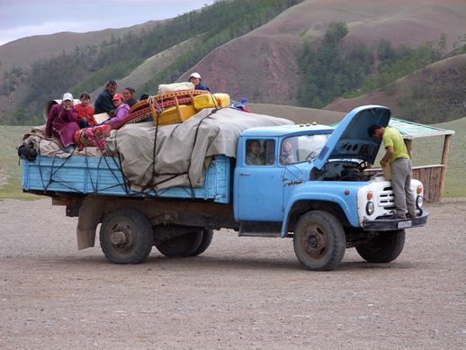

Registration Information for Visitors
Visitors to Mongolia, wanting to get out into the countryside, will need one of two things — time or a reasonable amount of money. Mongolia has a diverse range of landscapes and cultures to explore but an under-developed transport infrastructure makes travel to the major tourism locations difficult. Because of Mongolia’s large territory, travel times can be very long and prices very high compared to other countries in the Asia-Pacific region. Planes, trains, buses and jeeps or minibuses are the major forms of transport within Mongolia. MIAT (Mongolian International Air Transport flies year round to 17 of Mongolia’s 21 aimags. Most of the planes used are old Russian Antonov 24’s. Few of the countryside airports have paved runways. Internal flights can be as much as 4 hours. There is a two-tier system of charges (one for Mongolians and one for foreigners. Prices range between US$58 and US$297 (return) depending on destination. Foreigners will always need to pay for their flights in US$ and tickets can be purchased from MIAT’s head office in the centre of Ulaanbaatar. The baggage allowance for internal flights is Kg. Because of the lack of a fully computerised booking facility, the return part of any flight cannot be reserved in advance, although payments can be made. The return part of any flight needs to be reserved upon reaching the destination from which you will fly back. All flights are served directly from Ulaanbaatar, although some routes will include a stop-off, for example, flights to Khovd will stop at Moron, an ideal place to get a jeep to Khovsgol. Check in times for all internal flights are two hours. Passengers are advised to note that internal flights do not have toilet facilities and that seat belts do not always work.
Train
Apart from the Trans-Mongolian trains between Moscow and Beijing, there are also local trains that ply the same length of track. In addition, there are also tracks to Baganuur, the industrial town east of Ulaanbaatar and Erdenet, a copper town in the north of the country. Domestic rail travel is not very popular with tourists as there are few places of interest on route, although from Erdenet, it may be possible to get a jeep to Lake Khovsgol. Restaurant cars are only available on some routes. On internal routes, there are two classes available — soft seat and hard seat. The advanced purchase of tickets (up to ten days beforehand) is advised to guarantee seats and avoid a scramble and long queues. Prices for all destinations are under US$15 and are payable in tugrugs. Tickets can be purchased from the ticket office outside the station. On overnight journeys, clean sheets can be hired for a few hundred tugrugs.
Shared Jeeps and Minibuses
Russian jeeps and minibuses travel regularly between Ulaanbaatar, aimag centres and some tourist destinations. The times and frequency of departures depend upon demand. This form of transport is normally quicker and more comfortable than the buses, although drivers will try to squeeze as many people into their vehicles as possible. Prices are higher than for the buses . Public shared jeeps and minibuses also leave from the long-distance bus stand. Finding out where vehicles are going could be difficult, as many jeeps will not have the destination names visible.
Renting Transport
One of the most satisfying and comfortable ways to travel is to hire a jeep and drive yourself. Again, the long-distance bus stand is a good place to start looking. Most drivers will be happy to reduce the number of passengers, as they will make up the difference in cost by charging around MNT300/km (the same as for taxis in Ulaanbaatar). This price should include the driver’s expenses, although visitors are advised to agree the terms and costs in advance. This includes checking the odometer reading before setting off. If you have the time and the money, this is definitely the best way to see and experience the countryside. Jeeps and minibuses can often be arranged in aimag or tourism centres, particularly when planes arrive during the tourist season. It is possible to rent or buy bicycles, horses and camels although these are not considered viable for long journeys.